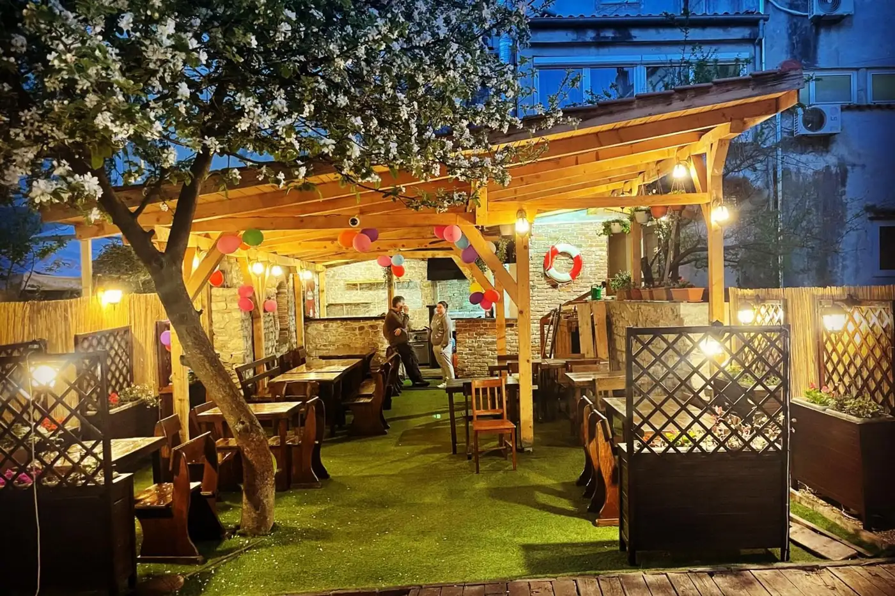
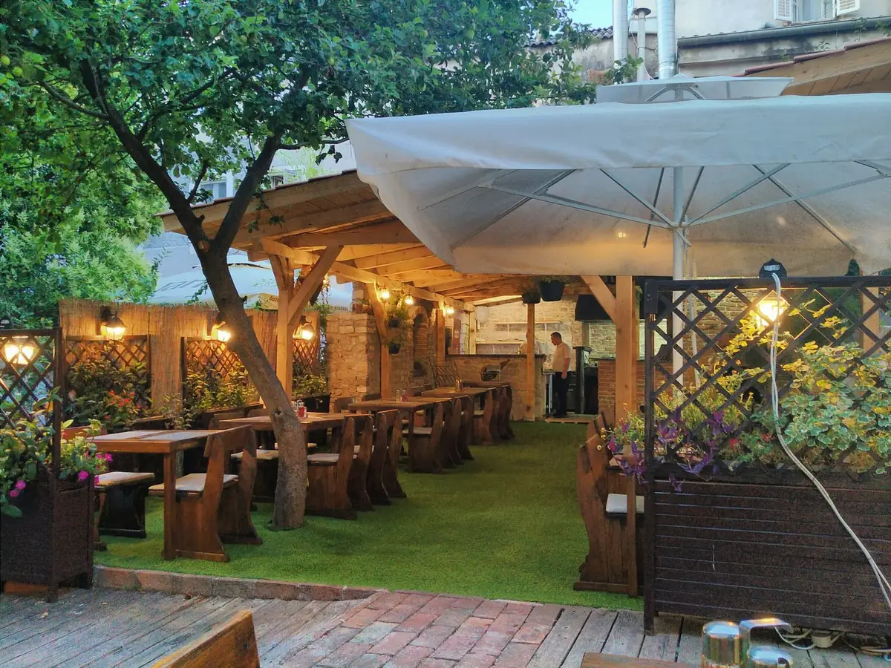
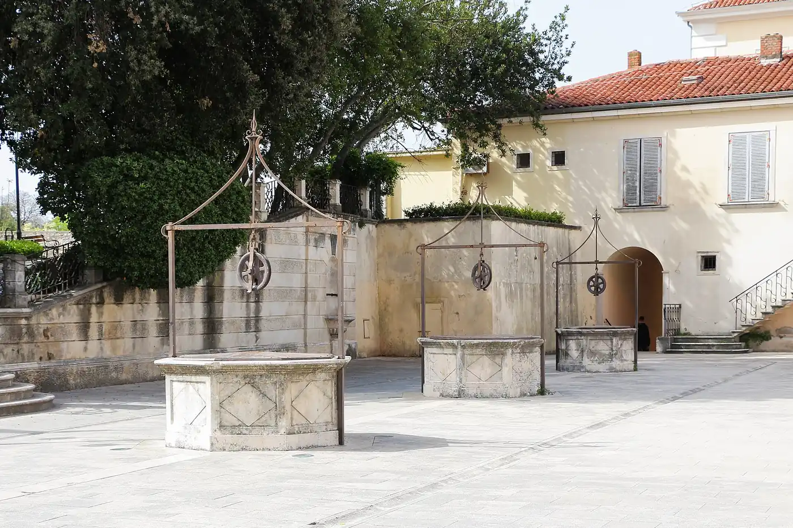
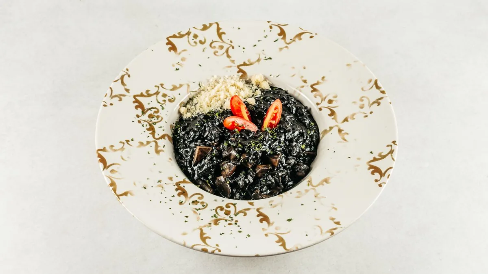
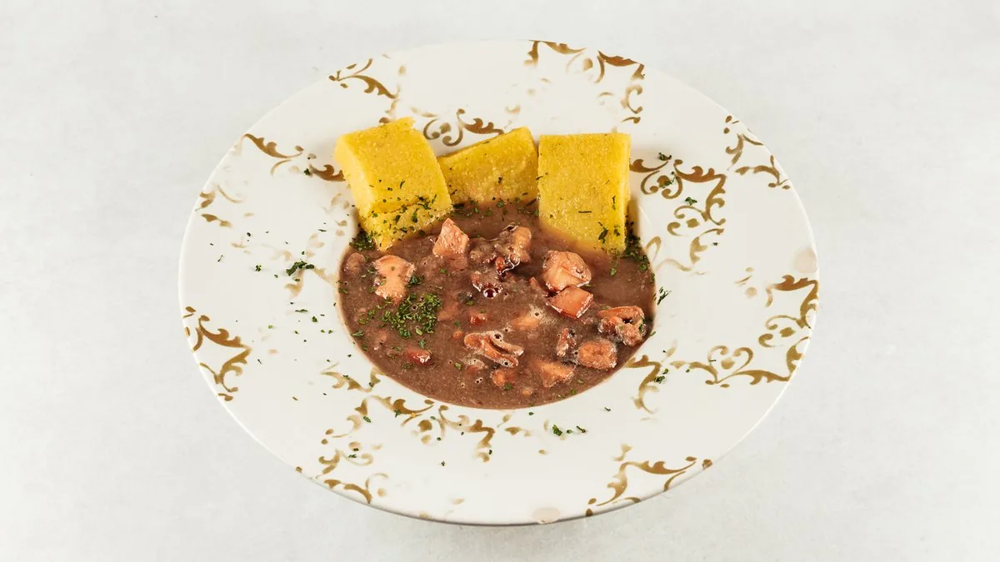
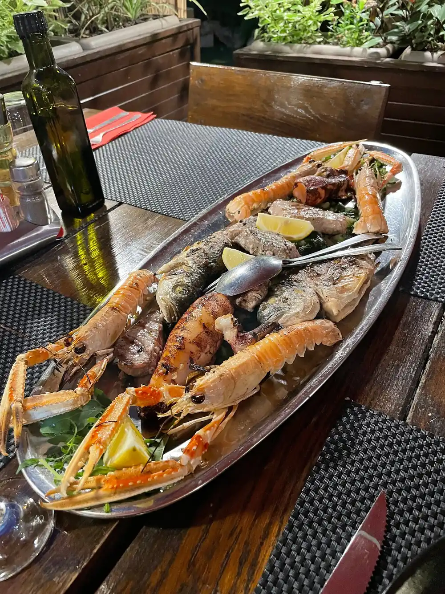
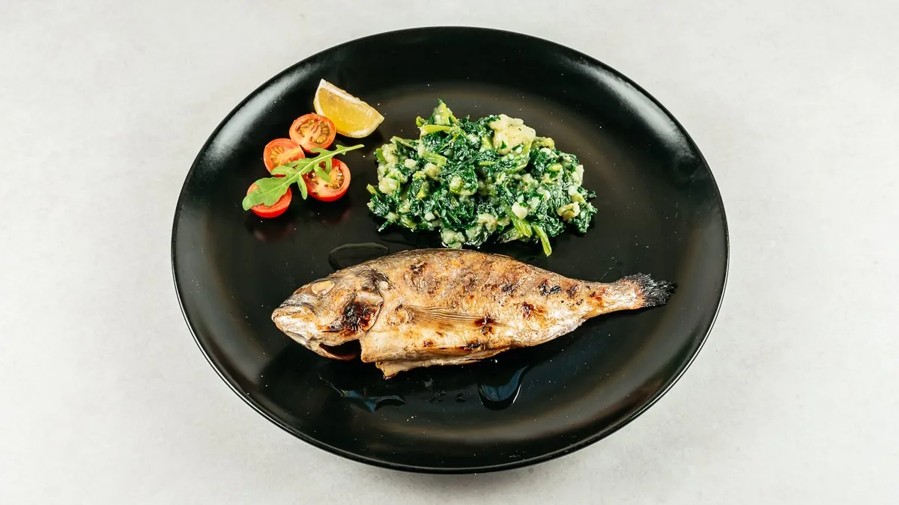
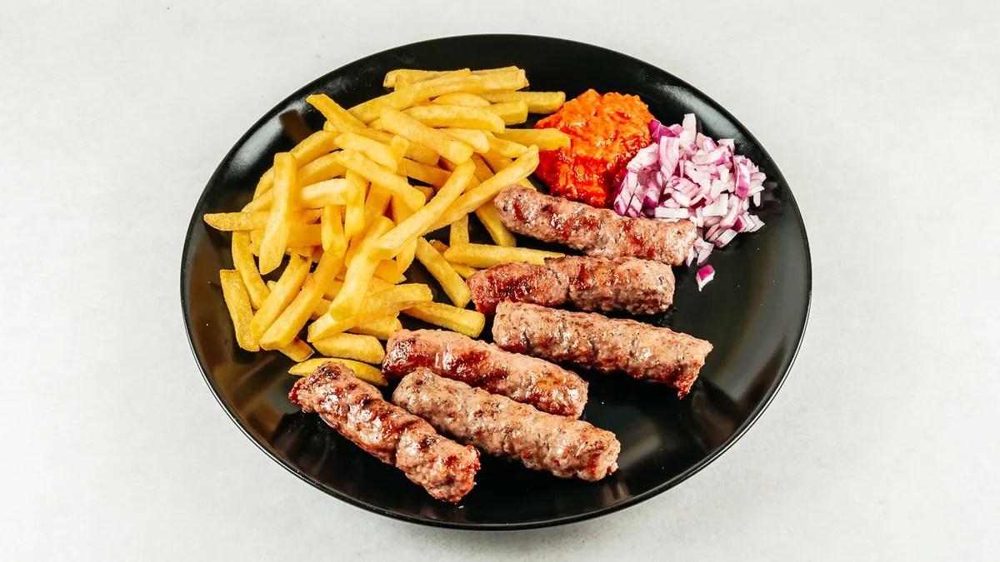
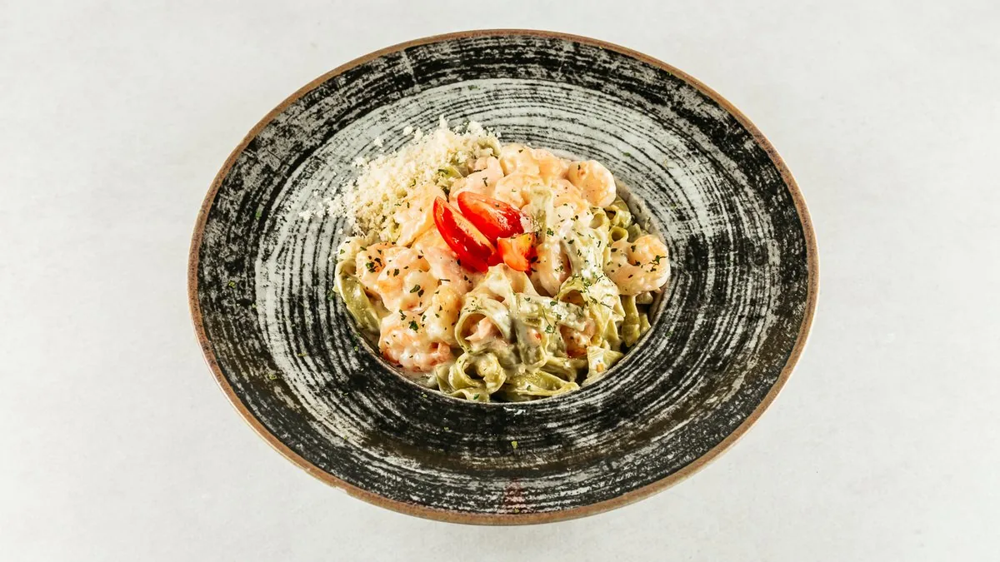
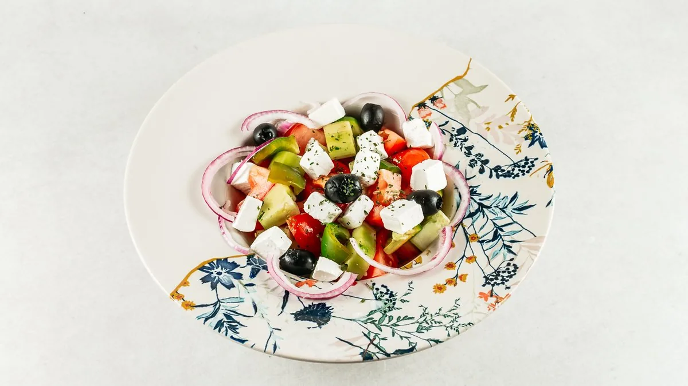

Riba s roštilja i mesne plate pod pergolom,
dvije minute od Narodnog trga.
Konoba Misterija radi na adresi Ul. Špire Brusine 8, u starom gradu Zadra. Kuhinja je mediteranska: svježa riba i plodovi mora s roštilja, rižoti, tjestenina, pašticada i mesne plate. Gostima je na raspolaganju natkrivena vrtna terasa pod drvenom pergolom, klimatizirani unutarnji prostor i besplatan WiFi. Otvoreno je svaki dan od 09:00 do 23:00.

Glavni prostor konobe je vrtna terasa: drvena pergola, duge klupe i stolovi, lampioni i stablo u sredini dvorišta. Terasa je natkrivena, pa se sjedi i kad zapuhne bura. Uz nju je klimatizirani unutarnji dio i kameni roštilj na kojem se priprema riba i meso.
Ponuda je mediteranska: brancin i orada s roštilja, škampi i dagnje na buzaru, crni rižoto, brudet od hobotnice i sipe, pašticada, ćevapi i mesne plate za dvoje. Uz obrok idu domaći prilozi, blitva s krumpirom i sezonske salate.
"Najbolja domaća kuhinja u Zadru."
Opis konobe na vlastitom profilu
Konoba Misterija je na adresi Ul. Špire Brusine 8, na zadarskom poluotoku, u pješačkoj zoni starog grada. Trg 4 kantuna je nekoliko koraka dalje, Narodni trg i Kneževa palača stotinjak metara, a Trg pet bunara i Kopnena vrata oko 180 metara.
Do Rimskog foruma i crkve svetog Donata treba oko pet minuta hoda, do morskih orgulja i Pozdrava suncu na vrhu poluotoka desetak. Stari grad je pješačka zona: najbliže veće parkiralište je Poljana Plankit, oko 400 metara od konobe.








Za rezervaciju nazovite konobu ili pošaljite e-mail. Ljeti je rezervacija preporučena, osobito za veće društvo i za stol na vrtnoj terasi. Konoba prima i grupe te privatna događanja.
Radno vrijeme prema Google profilu konobe. Prije dolaska ga provjerite na Googleu ili telefonom.
Nazovite konobu ili pošaljite e-mail.
Otvoreni smo svaki dan od 09:00 do 23:00. Radno vrijeme prije dolaska provjerite na Google profilu konobe ili na broju +385 91 135 5647.
Na adresi Ul. Špire Brusine 8, 23000 Zadar, u pješačkoj zoni starog grada na zadarskom poluotoku. Narodni trg je stotinjak metara, a Trg pet bunara i Kopnena vrata oko 180 metara.
Nazovite +385 91 135 5647 ili pišite na konoba.misterija@gmail.com. Ljeti je rezervacija preporučena, osobito za veće društvo i za stol na vrtnoj terasi.
Stari grad Zadra je pješačka zona, pa se do konobe dolazi pješice. Najbliže veće javno parkiralište je Poljana Plankit, oko 400 metara od konobe.
Da. Glavni prostor konobe je natkrivena vrtna terasa pod drvenom pergolom, s drvenim klupama i stolovima. Uz nju je i klimatizirani unutarnji prostor.
Da, ljubimci su dobrodošli. Konoba na svom profilu navodi da prima kućne ljubimce.
Da. Primamo Mastercard, VISA i debitne kartice.
Cijena po osobi kreće se okvirno od 15 do 35 €. Riba i meso s roštilja idu od 16 do 28 €, a plate za dvoje 54 € (mesna) i 60 € (riblja).
Da. Na jelovniku su rižoto s povrćem i curryjem, vegetarijanski spaghetti, povrće sa žara te grčka, miješana i sezonske salate.
Da. Konoba nudi konzumaciju u lokalu, hranu za van i dostavu. Dostava putem Wolta radi svaki dan od 11:00 do 21:45.